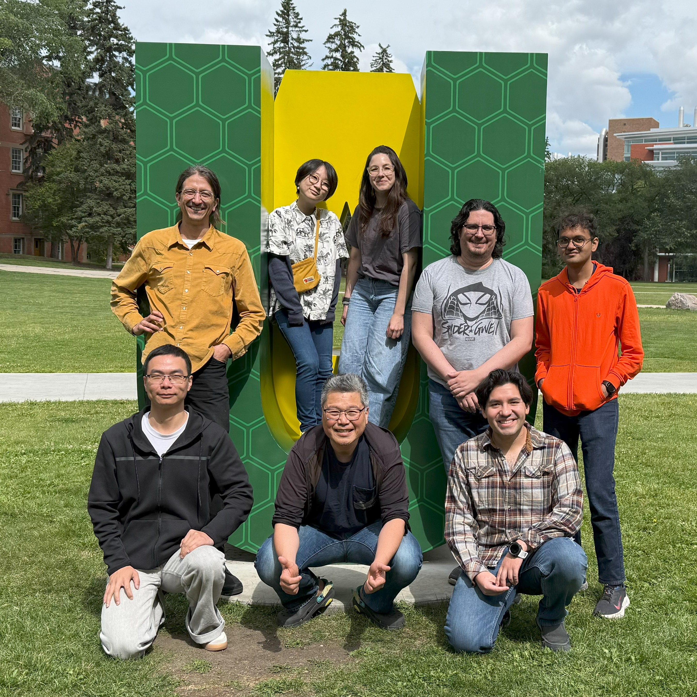

Status:
Role:
Shinichi Nakagawa [he/him]

|
Email: snakagaw(-at-)ualberta(-dot-)ca
I am a Professor of Evolutionary Ecology and Synthesis at the University of Alberta. Also, I was an ARC Future Fellow, an Alexander von Humboldt Fellow and a Rutherford Discovery Fellow in the past. I was born in Nagano and brought up in Saitama, Japan. After turning 21, I went to New Zealand to see penguins. I did BSc (Hons) at the University of Waikato, New Zealand (2003) and PhD at the University of Sheffield, United Kingdom (2007). After a brief postdoc period, I got a job as lecturer at the University of Otago (2008). In 2015, I moved to UNSW, Sydney. |
Malgorzata (Losia) Lagisz [she/her]

|
Email: m(-dot-)lagisz(-at-)unsw(-dot-)edu(-dot-)au
I joined the SN research group in Dunedin, in October 2009, to help developing a database for meta-analysis of effects of dietary restriction on animal longevity. Since then I contributed to several projects on various topics, my involvement ranging from teaching molecular genetics skills and collecting data, to writing comparative and meta-analytic papers. I did my biology degrees (MSC and PhD) in Poland, held two postdoc positions in the UK (Sheffield and Newcastle upon Tyne), then moved to New Zealand, where I lived until moving to Australia in 2015. |
Ayumi Mizuno [she/her]

|
Email: ayumi(-dot-)mizuno5(-at-)gmail(-dot-)com
I am a visiting research fellow at the I-DEEL. I did my PhD at Hokkaido University in Japan. My research is focused on understanding the evolutionary relationships between diet and morphological characteristics in birds, using behavioural experiments and phylogenetic comparative approaches. My research subject is mainly Estrildid finches, a group of small passerine birds found in the Old World tropics and Australia. However, my love for birds extends to all avian species - a passion that began when I was just five years old. In my free time, I enjoy reading books, trying new recipes in the kitchen, and visiting museums. |
Erick Lundgren [he/him]

|
Email: erick(-dot-)lundgren(-at-)gmail(-dot-)com
Erick Lundgren’s research primarily focuses on novel ecosystems, or communities composed of both introduced and native species. These systems provide opportunities to test how communities assemble and how to understand global patterns of biodiversity change. He is currently using meta-analytic approaches to test longstanding questions regarding how novel ecosystems function relative to native ones. |
Anna Lenz [she/her]

|
Email:
I joined I-DEEL in January 2025 as a PhD student, bringing a background in neuroethology and bioacoustics. My research examines how anthropogenic noise pollution affects animal health and ecosystems using systematic evidence synthesis and meta-analysis. Through my research, I aim to bridge knowledge gaps and contribute to evidence-based conservation. I’m particularly drawn to the misfits—the unheard and underrepresented species like reptiles, amphibians, rodents, and bats. While studying urban bats at the University of Alberta, I discovered the hidden world of ultrasonic noise pollution—an overlooked yet pervasive environmental stressor. This realization fueled my drive to understand and mitigate human impacts on wildlife at a global scale, ultimately leading me to I-DEEL. Beyond research, I enjoy baking, spending time with my dogs, going to the beach, and volunteering in social work and science outreach for youth. |
Elena Gazzea [she/her]

|
Email: elena(-dot-)gazzea(-at-)unipd(-dot-)it
I am a visiting research fellow at the I-DEEL, working on a meta-analysis project on pollination dependence of crops. I recently obtained my PhD with Prof Lorenzo Marini at the University of Padova, Italy. My education background is in Forest Science, and my research interests lie in studying the ecology of pollinators in forest and agricultural landscapes, assessing the effectiveness of conservation interventions and the effects of natural disturbances, e.g. windthrows, on pollinator biodiversity. |
Santiago Ortega [he/him]

|
Email: santiago(-dot-)ortega(-at-)ualberta(-dot-)ca
I joined the group in 2025 after completing my PhD at the Universidad Nacional Autónoma de México (UNAM). My doctoral research focused on life history plasticity in blue-footed boobies, combining long-term field monitoring on Isla Isabel—often called the Mexican Galápagos—with Bayesian modeling to explore reproductive strategies in changing environments. I am particularly interested in using a meta-analytic approach to examine the pace of life syndrome across different taxa. In my spare time, I enjoy playing video games, visiting museums, and embroidery. |
Sergio Poo Hernandez [he/him]
|
Email: pooherna(-at-)ualberta(-dot-)ca
I joined the group in July 2025. I have a PhD in Computing Science from the University of Alberta. My doctoral research focused on enhancing bird neural network classifiers with additional input information. My current work focuses in the creation of tools for biological research as well as in explainable Artificial Intelligence (AI) research. |
Bhavya Jain [he/him]

|
Email: bjain1(-at-)ualberta(-dot-)ca
I am a summer research assistant at the COSSEE Lab and recently graduated with a Bachelor of Science in Computing Science from the University of Alberta in May 2025. My academic and research interests lie at the intersection of scientific computing, optimization, and reinforcement learning. I’ve worked on a wide range of projects—from solving geometric simulation problems like the Un-illuminable Rooms puzzle to building an Android app for tracking and sharing moods, and exploring artificial life through program synthesis and evolutionary reinforcement learning. I am contributing to COSSEE Lab through data extraction and web development. Outside of work, I enjoy playing badminton and traveling. |
Yefeng Yang [he/him]
|
Email: yangyefeng_0920(-at-)163(-dot-)com
I did my Ph.D. and postdoc at Zhejiang University, where my research interests focus on the non-visual effects on chicken. By doing a mixture of animal experiments and synthesis research, we aim to optimise the light environment for improvied chicken welfare. Now I am visiting II-DEEL lab to work with Shinichi, Losia and Yong on tans-generational effects. |
Patrice Pottier [he/him]
|
Email: p(-dot-)pottier(-at-)unsw(-dot-)edu(-dot-)au
I joined the I-DEEL lab in early 2020 as a Scientia PhD student with Shinichi, Szymek Drobniak and Tracey Rogers. My research aims to investigate the senescence of phenotypic plasticity and its interplay with climate change. Using mainly meta-analyses, we will not only reveal how phenotypic plasticity could confer resilience to climate change but also how, in turn, climate change could alter ageing and plasticity. Outside of science, I spend most of my time exploring Sydney surroundings, exercising, snorkeling, and eating the awesome vegan food of Sydney. |
Jess Tam [he/him]
|
Email: j(-dot-)tam(-at-)unsw(-dot-)edu(-dot-)au
I grew up in Hong Kong and completed my BSc in biology at UNSW, Sydney. I joined the I-DEEL lab in 2020 as an honours student and did a project on biases in mammalian research, supervised by Shinichi and Will Cornwell. I then transitioned into a PhD student in 2022, supervised also by Richard Kingsford and Sowmya Arcot. My current project focuses on using computer vision to automatically identify species of animals in camera trap images and track their behaviour with video recordings. In my spare time, I enjoy going on photo walks, making various Hong Kong dishes and desserts, playing and listening to music, and singing karaoke with my friends. |
Lorenzo Ricolfi [he/him]
|
Email: l(-dot-)ricolfi(-at-)unsw(-dot-)edu(-dot-)au
I graduated with honours in Natural and Environmental Sciences at La Sapienza University of Rome. Afterward, I completed a post-graduate and professional course in Environmental Pollution and Human Health at the University of Genoa. Simultaneously, I was flying to and from the south of Mozambique to work on an international project aiming at consolidating the capacities of decision-makers responsible for land planning and management of natural resources. In February 2022, I joined the Inter-Disciplinary Ecology and Evolution Lab as a PhD Student working on Research Synthesis and Meta-research on the impacts of PFAS on humans and wildlife health. |
Coralie Williams [she/her]
|
Email: coralie(-dot-)williams(-at-)unsw(-dot-)edu(-dot-)au
I moved from Paris, France to join the I-DEEL lab in May 2022 to start a PhD under the supervision of Shinichi Nakagawa and David Warton. My project aims to develop new meta-analysis tools in the context of ecological, evolutionary, conservation and environmental research, but also in research fields beyond. During my PhD I hope to apply and expand my skills as an applied statistician and researcher. Growing up on an island, New-Caledonia, I am passionate about anything related to the ocean. |
Kyle Morrison [he/him]
|
I joined the I-DEEL lab in May 2022 as a PhD student with Shinichi and Losia. My research aims to investigate the impacts of pesticide use on human and ecosystem health using widespread research synthesis techniques. Prior to moving to Sydney, I grew up in a city called Belfast in Northern Ireland and studied Zoology at Queen’s University Belfast. During my time in Queen’s, I had the great opportunity to travel around southern Africa which I monitored bird abundances in national parks within the Limpopo basin. Outside of science, I enjoy exploring and reading but I’d be lying if I didn’t say my favourite thing to do is have a cold pint of Guinness.
|
Joseph Cincotta [he/him]
|
Joseph joined i-DEEL in 2023 to begin his higher-degree research into using AI and machine learning methods to identify animal behaviour. His research is part of a collaboration between Taronga Zoo and BEES at UNSW. Joseph is an experienced computer scientist who has worked in software design and data science in Australia and the United States for over 25 years, designing technical solutions, patents and code for many multi-national corporations such as Facebook, and Intel. He has also contributed to multiple technology start-ups, acting as the founding Chief Technology Officer, building initial ideas into working commercial software systems that matured and were ultimately acquired.
|
Pietro Pollo [he/him]

|
Email:
pietro_pollo(-at-)hotmail(-dot-)com
After completing a PhD at UNSW with Michael Kasumovic, I joined the I-DEEL lab in January 2023 as a research assistant. My research is focused on behavioral ecology and sexual selection, but I have also worked with arthropod systematics and bioacoustics in the past. My current project aims to explore meta-analyses in sexual selection, using systematic mapping and bibliometrics. In my spare time, I like watching movies and playing games (on PC or board ones). |
April Martinig

|
Email:
aprilmartinig(-at-)hotmail(-dot-)com
I work at the intersection of animal behavioural ecology and applied ecology. More specifically, I’m interested in understanding how consistent variation in individual behaviour contributes to performance differences across lifetimes, particularly during dispersal. I joined I-DEEL in May 2022 as a Canadian NSERC postdoctoral fellow after completing my PhD at the University of Alberta (Behavioural and ecological predictors of dispersal outcomes in red squirrels) and MSc at Concordia University in Montreal (Investigating the effectiveness of wildlife passages for smaller mammals). For my postdoc at UNSW, I will be in using multifaceted approaches, including meta-analyses and agent-based modelling, to understanding the evolutionary ecology of dispersal decisions. |
Szymek Drobniak [he/him]

|
Email:
szymek(-dot-)drobniak(-at-)gmail(-dot-)com
Polish by birth, world wanderer by occupation, artist deep inside. In my science I focus mostly on phenotypic plasticity, quantitative genetics and the evolutionary drivers of animal & plant colouration. I’m also very much into modern stats and mathematical modeling - I use extensive meta-analyses and comparative models to answers questions I cannot tackle empirically. I love traveling and mountain hiking, often doing both while working (I study blue tits on Swedish Gotland and hummingbirds in Costa Rica). As a DECRA Fellow, at UNSW I will use lab experiments & meta-analyses to study the senescence of phenotypic plasticity. When not doing science I run, design book covers and illustrations (you can see some of it at szdrobniak.pl), write poetry or collect elements. |
Philip Downing [he/him]

|
Email:
philip(-dot-)downing(-at-)oulu(-dot-)fi
Instagram: @pip.squiggles (www.instagram.com/pip.squiggles/) I am a visiting research fellow in the I-DEEL lab. I did my PhD at the University of Oxford, a postdoc at Lund University in Sweden, and I am currently a postdoc the University of Oulu in Finland. My research is focused on understanding the evolution, distribution, and diversity of cooperation across the Tree of Life, which I investigate using phylogenetic comparative methods and meta-analysis. I like to communicate about my research and growing up in Uganda with Lego bricks on Instagram. |
Yong Zhi Foo

|
Email:
fooyongzhi(-at-)gmail(-dot-)com
I did my PhD and a recent postdoc at the University of Western Australia with Prof Gillian Rhodes and Prof Leigh Simmons, where I applied a range of research techniques, including meta-analysis, visual perception studies, dietary experiments, and physiological health measures, to study the evolutionary basis of mate preferences in humans. Through this work, I find myself becoming increasingly interested in broader sexual selection questions such as honest signalling and trade-offs between life-history traits. I am currently working at the I-DEEL lab as an Endeavour Research Fellow on a 6-month meta-analysis project. |
Erin Macartney

|
Email:
e(-dot-)macartney(-at-)unsw(-dot-)edu(-dot-)au
I am a Post-Doc in the I-DEEL Lab after completing a PhD and MSc with Prof Russell Bonduriansky at UNSW, Sydney. I am particularly interested in phenotypic plasticity and reproductive investment as well as transgenerational inheritance. Prior to moving to Sydney, I grew up in a town called New Plymouth in Taranaki, New Zealand, then moved to Wellington to complete a BSc and Post-Graduate Diploma in Ecology and Biodiversity at Victoria University. In between studying, I have worked as a research assistant for a range of different projects: from understanding environmental effects on infant pneumonia to island-mainland effects on invertebrate functional groups. When I haven’t been doing science, I have been fortunate enough to spend my time visiting many biodiversity hotspots including the Galapagos, Madagascar and the Amazon. |
Rose
O'Dea

|
Email:
rose(-dot-)eleanor(-dot-)o(-dot-)dea(-at-)gmail(-dot-)com
After growing up in Canberra I moved to Sydney at the same time as the I-DEEL lab, where I spent a year as a research assistant before starting a PhD. During my PhD I’m becoming well-acquainted with R and zebrafish, by doing a mixture of meta-analyses and lab experiments to measure different aspects of phenotypic variance. |
Laura Wilson

|
Email: laura(-dot-)wilson(-at-)unsw(-dot-)edu(-dot-)au
Laura is an evolutionary morphologist, working at the interface of evo-devo and palaeontology. Laura currently works at ANU, Canberra, Australia. |
Fonti Kar

|
Email:
fonti(-dot-)kar(-at-)mq(-dot-)edu(-dot-)au
Fonti's PhD focused on the importance of inter-individual variation for the evolution of phenotypic plasticity. She worked with an egg-laying lizard species and manipulated the temperature at which eggs develop in. Font works as and Postdoctoral researcher, at BEES, UNSW, Australia. |
Carlos Esteban Lara

|
Email:
celarav(-at-)gmail(-dot-)com
Carlos did his thesis with Shinichi studying the dunnock variable mating system. Carlos' work focused on understanding the effects of mating systems on parental care and male and female gametic investment. Carlos works as a lecturer at the Institute of Biology at the Universidad de Antioquia, Medellín, Colombia. |
Fernando Javier Roca Fraga
|
Email:
f(-dot-)roca(-at-)massey(-dot-)ac(-dot-)nz
Javier did his PhD at the Massey University in Palmerston North, New Zealand. He is originally from Ecuador and completed a Bachelor of Agricultural Engineering at Zamorano University in Honduras. He moved to New Zealand to pursue postgraduate studies in pastoral livestock production. His work with Shinichi involves both meta-analytical studies as well as field work to investigate the effect of maternal pregnancy nutrition on sheep productivity. Javier works as a lecturer at the Massey University in Palmerston North, New Zealand. |
Eduardo Santos
|
Ed did
his PhD study with Shinichi focusing on
the interplay between mating systems
and parental care in the dunnock
Prunella modularis.
Ed is a lecturer at the Universidade de São Paulo, Sao Paulo, Brasil. |
Alistair
Senior
|
Alistair did his PhD study with
Shinichi studying
the individual and population level
effects on induced sex-reversal in
fish.
Alistair works as a postdoc at The University of Sydney, Sydney, Australia. |
Yu-Hsun Hsu
(Echo)
|
Echo did
her
PhD project with Shinichi
investigating the causes and
consequences of extra-pair paternity in
the house sparrow population on Lundy
Island, UK. This research was a part of
joint project between the University of
Otago, NZ, and the University of
Sheffield, UK.
Echo works as a postdoc at National Taiwan Normal University, Taipei, Taiwan. |
Jamie
McQuillan
|
Jamie held a number of research
positions at the University of Otago,
interspersed with several extended
stints of overseas travel. He did his
PhD working on neurobiology of honeybee
under supervision of Alison Mercer and
Shinichi, at the University of
Otago, NZ.
Jamie works as a postdoc at the University of Otago, NZ. |
Benedikt Holtmann
|
Email:
benedikt(-dot-)holtmann(-at-)gmail(-dot-)com
Originally from Germany, Benedikt moved to New Zealand to do his PhD with Shinichi. In his doctoral research, he examined the causes and consequences of behavioural variation using the dunnock (Prunella modularis) as a study species. His work combined field and laboratory work as well as meta-analytical approaches. Benedikt is back in Germany working as a postdoctoral researcher. |
Samantha Burke [she/her]

|
Email:
samantha(-dot-)burke(-at-)unsw(-dot-)edu(-dot-)au
I joined the I-DEEL lab in February 2020 to start a PhD program with Shinichi Nakagawa, Tracey Rogers, and Szymek Drobniak. My project will focus on the impact of climate change on marine organisms with connections to phenotypic plasticity and ageing. Using meta-analyses and secondary synthesis, my PhD will examine how phenotypic plasticity may influence organisms’ responses to climate change, and in turn, how climate change may influence an organism’s plasticity. |
Matt Gibson [he/him]
|
Email:
contact(-dot-)matt(-dot-)gibson(-at-)gmail(-dot-)com
I am an applied machine learning researcher with interests in computer vision, decision science and computational sustainability. In 2023, I submitted my doctoral thesis, "Weakly Supervised Machine Learning for Remote Sensing". Previously, I was studying with Prof. Arcot Sowmya in the Computer Vision and Machine Learning Lab at the School of Computer Science and Engineering at UNSW. I hold a B.Sc.(H1) in Mathematics from the University of Auckland and an M.Sc. in Mathematics from the University of Sydney. |
Catharina Vendl

|
Email:
c(-dot-)vendl(-at-)unsw(-dot-)edu(-dot-)au
I have a degree in veterinary science from Germany. I did my PhD at the UNSW Mammal Lab on the respiratory microbiota in whales and dolphins to develop a tool for non-invasive population health assessment. I joined the I-DEEL lab as lab manager and research assistant in May 2020. |
Dony Indiarto

|
Email:
dony(-dot-)indiarto(-at-)gmail(-dot-)com
I joined Shinichi's lab in February 2018 as a PhD student. I'll be working on species turnover and range shifts under gradual changes of climatic variables and frequent extreme-climatic events with Shinichi, Daniel Falster, and Will Cornwell. I'll be utilising a large database of plant functional trait and computational approach for my studies. I am an Indonesian and eager to learn multiple cultures. While in Australia, I will also make the most of my spare time to explore the fascinating Australian landscapes and wilderness. I enjoy bushwalking and camping very much. |
Hamza Anwer
|
Email:
sharkyboy_909(-at-)hotmail(-dot-)com
Before joining the I-DEEL lab as a PhD student, I worked with Shinichi and a few others from the lab at Garvan Institute as a research assistant. My main role was maintenance of zebrafish, as well as assisting various experimental procedures. My PhD aims to address various questions in evolutionary biology from phenotypic variation to the developmental origins of health and disease and will involve conducting systematic reviews of studies concerned with high fat diets; and experimental work involving dietary manipulation in zebrafish (Danio rerio). Outside of life as a scientist, I enjoy an active lifestyle consisting of mainly bodybuilding and rugby league. |
Dom Mason

|
Email:
dpmason91(-at-)gmail(-dot-)com
Dom joined the I-DEEL lab after completing his undergrad in Marine Biology at UNSW, in 2019. He had a keen interest in aspects of evolutionary biology and was working closely with lab members in behavioural research with zebrafish. His main roles included assisting with zebrafish maintenance and developing assays for automated experimental units (Zantiks AD). |
Joshua Markovski

|
Email:
joshua(-dot-)markovski(-at-)gmail(-dot-)com
Josh joined Shinichi’s lab early 2020 as an undergraduate student in an Advanced Science degree at UNSW. He worked on his Honours project with Shinichi, Will Cornwell and Corey Callaghan as supervisors. The project involved investigating how the relationship between sexual dichromatism and demography in Passerine birds is impacted by latitude and geography. |
Dax Kellie

|
Email: dax(-dot-)kellie(-at-)gmail(-dot-)com
Dax completed his PhD in the E&ERC at UNSW, which aimed to understand how cultural and evolutionary factors influence sexist attitudes and behaviours. He then worked for several months on a project with Shinichi and Prof. Tim Parker to understand sources of variation in ecology and evolution research. He is currently working as a data analyst for the Indigenous Mental Health and Suicide Prevention Unit in the Australian Institute for Health and Welfare.
Twitter:
@daxkellie
|
Joanna Rutkowska

|
Email:
joanna(-dot-)rutkowska(-at-)uj(-dot-)edu(-dot-)pl
Although in each sexually reproducing organism an individual has mother and father, non-genetic inheritance has been predominantly studied in the form of maternal effects (and I consider maternal effects to be my field of expertise). In recent years development of new theoretical, computational and empirical tools resulted in more interest and new insights into paternal effects. Yet, there are virtually no systematic/meta-analytical studies that would summarize knowledge on paternal effects. During my sabbatical year made such a quantitative research synthesis using the methodology developed by Shinichi. I came to Sydney from the Jagiellonian University in Krakow, Poland, where I am a faculty member. |
Susi
Zajitschek

|
.Email:
susi(-dot-)zajitschek(-at-)gmail(-dot-)com
My research focuses on evolutionary biology and encompasses reproductive biology, behavioural ecology and molecular genetics as well as the study of life history. I have a special interest in transgenerational effects, in particular the roles of parental behaviour and social circumstances on offspring traits. While I have recently utilized small insect species to investigate the role of sexual conflict on a transgenerational scale, I am very excited to be returning to working on zebrafish! Susi currently works as a lecturer at the Liverpool John Moores University, UK. |
Nathan
Burke

|
Email:
nathwilliamb(-at-)runbox(-dot-)com
I have a broad interest in evolutionary ecology, but I am particularly attracted to fascinating and controversial questions in Biology. During my PhD (supervised by Russell Bonduriansky), I investigated how the ecology of sexual interactions—such as mate choice and mate rejection—shapes the prevalence of sex and parthenogenesis in animals. Using the spiny leaf stick insect (Extatosoma tiaratum) and Cyclone Larry sick insect (Sipyloidea larryii)—both of which are capable of sexual and asexual reproduction—I investigated how eco-evolutionary dynamics driven by sexual conflict could help to explain the dominance of obligate sex and rare transitions to asexuality in animal systems. More recently I’ve been thinking about the phenomenon of ‘geographic parthenogenesis’—i.e., the spatial structuring of sexual and asexual reproduction—and the factors that contribute to it. Apart from these interests, I was working as a part-time postdoc researcher in the i-deel lab modelling the sex-specific ecological conditions that promote the evolution of maternal and paternal effects. |
Daniel Noble
|
Email:
daniel(-dot-)wa(-dot-)noble(-at-)gmail(-dot-)com
Dan has been part of our research group as an ARC DECRA Fellow interested in phenotypic plasticity and the role of early environmental and maternal effects in shaping the covariance between physiology, behaviour and life history. He is testing theory in this area using a number of model systems including lizards, fish and Daphnia. Dan also has a keen interest in statistics, meta-analyses and reproducible research. Dan currently works as an lecturer at the Australian National University, Canberra, AU. |
Alex B Aloy

|
Email:
a(-dot-)aloy(-at-)unsw(-dot-)edu(-dot-)au
After years doing field ecology, I will be shifting towards laboratory work on environmental epigenetics using the zebrafish model system. I have chosen Shinichi’s lab for my PhD as I am very keen on learning new and cool stuff about conducting behavioural studies, data analyses (meta-analyses, R, etc.) and molecular laboratory work. |
Gihan Samarasinghe

|
Email:
gihan(-dot-)samarasinghe(-at-)unsw(-dot-)edu(-dot-)au
I joined Shinichi Nakagawa’s group in October 2017 as a Research Associate, for one year. I was working with Shinichi and Losia in a project on Mapping of Low Carbon Living-related systematic reviews. I was engaged in analysis of systematic reviews and planning work on automation of meta-analyses and systematic mapping using machine learning techniques, including deep learning. Gihan currently works in industry. |
Joel Pick
|
Joel was a SNSF research fellow at
UNSW. His work focuses predominantly on
the interactions between parents and
offspring, and especially on the causes
and consequence of variation in
parental investment in birds. I am also
interested in statistical methodology,
such as quantitative genetic modelling,
comparative analysis and meta-analysis.
He did his PhD at the University of
Zurich, Switzerland, and his Masters at
the University of Sheffield, UK.
Joel currently works at the University of Edinburgh, UK. |
Marissa
Baptista

|
I was an undergraduate student at UNSW
in the third year of an Advanced
Science degree, double majoring in
Molecular Biology and Genetics when I
joined the i-deel lab at the end of
2016 as part of a summer research
scholarship after hearing about
Shinichi’s work through a lecture given
at the uni. I worked as a part time
research assistant for the group,
focusing mainly on molecular lab
work.
|
Melissa
Fangmeier

|
Email:
melissa(-dot-)fangmeier(-at-)outlook(-dot-)com
Melissa worked as a research assistant for the I-DEEL team. Her background is in animal science, having studied Animal and Veterinary Bioscience at The University of Sydney, and completing her honours research project developing and modifying diluents to cryopreserve rabbit spermatozoa. For a year she was helping Rose with her PhD, as well as performing meta-analyses with Losia, and assisting to develop high-throughput behavioural screening assays for zebrafish at The Garvan Institute of Medical Research in their Diabetes and Metabolism division, under the guidance of Shinichi. Melissa now works as a veterinary nurse. |
Thomas
Merkling

|
Email:
thomasmerkling00(-at-)gmail(-dot-)com
As a part of Endeavour Research Fellow I was working with Lisa Schwanz and Shinichi. I am mostly interested in how environmental conditions influence reproductive decisions. During my PhD in France I investigated decisions such as sex allocation, hatching asynchrony and maternal effects in a seabird. After a postdoc at the ANU looking at lizard colouration, I came back to my first love and was doing a meta-analysis on maternal hormones and offspring sex as well as one on the influence of egg yolk hormones on offspring behaviour and fitness-related traits. Thomas currently works at McGill University, Canada. |
Takuji
Usui
|
Email:
usuitakuji(-at-)gmail(-dot-)com
I moved over from Edinburgh, Scotland to join the I-DEEL lab to work as a research assistant for a year. I first came to discover research conducted at I-DEEL after becoming interested in applications of meta-analyses in evolution and ecology during my Honours project at the University of Edinburgh, for which I carried out a phylogenetic comparative meta-analysis on avian phenology. Throughout my time with I-DEEL, I was pursuing this interest (this time delving into the area of evolutionary medicine) by conducting a meta-analysis of variance on animal models of stroke with Shinichi and Alistair, in collaboration with Prof. Malcolm Macleod (CAMARADES group). In addition, I was assisting with setting up zebrafish metabolism and respirometry work at The Garvan Institute of Medical Research, and more generally helping out with various lab work for other members of the team. Takuji is doing his PhD at the University of British Columbia, Canada. |
Anne
Besson
Originally from France, Anne did her PhD at the University of Otago, NZ. After a brief postdoc experience in France, she came back as a research assistant. Anne was working with us performing meta-analysis on the effects of maternal diet on offspring behaviours.
Nat Lim Jiahui
Originally from Singapore, Nat did his MSc with Shinichi, at the University of Otago, NZ. After that he worked in our group as a research assistant.
Currently, Nat is working at the University of Otago Genetic Analysis Services and as an Assistant Research Fellow in the Gemmell Lab, to assist the postdocs and students with their lab work.
Danilo G. Muniz
Danilo came from Brazil for an internship with our group. He was modelling extra-pair mating in dunnocks.
Katie Hector
Katie did her MSc with Shinichi, co-supervised by Prof. Phil Bishop. She then worked as a research assistant for Shinichi, performing several meta-analyses. Currently works as a school teacher.
Mike Hitchcock
Mike joined the SN Behavioural Ecology research lab in early 2011 for his MSc project. With his background mainly in fieldwork, he was keen to restore balance with a theory and laboratory-based project. He was undertaking a multi-levelled project investigating the effects of compensatory growth.
Luana Santos
Luana worked with our group as a research assistant. She came from Brazil and she finished her undergraduate degree in biology at Universidade Catolica de Brasilia –Brazil. While at Otago, she has been helping with the molecular biology and genetics of dunnocks and other species.
Jeffrey Vanderpham
Jeffrey received his Bachelors of Science in Biology (Ecology, Evolution and Conservation) from the University of Washington, US. Before returning to university for postgraduate studies, he worked in both the public and private sectors for environmental consultants. Through these positions he established a diverse background in fish biology, ecosystem restoration, wetland science, environmental assessment, and freshwater ecology. He completed his PhD at the University of Otago, with Shinichi and Prof. Gerry Closs as co-supervisors.
Morgan McLean
Originally from Dunedin, Morgan completed a bachelors degree in zoology at the University of Otago. During his MSc, co-supervidsed by Shinichi and Prof. Phil Bishop, he was looking into the unusual breeding behaviour of the Brown Tree Frog (Litoria ewingii), a species introduced to New Zealand from Australia around 130 years ago.
Karin Ludwig
Originally from Germany, Karin did her undergraduate and Masters research at the University of Otago with Prof. Ian Jamieson investigating saddleback song on a small island off Stewart Island. She joined our group as research assistant collecting ca 800 sparrow blood samples from throughout New Zealand and helping out with molecular genetic work.
Lonneke Kamphues
Loenneke came to Otago for an internship during her studies in Animal Husbandry in the Netherlands, BSc. During her internship, she was focusing on repeatability in the parental care of dunnocks.
Charlotte de Mouzon
Charlotte came from France for an internship while studying Master of Ethology corse at the University of Paris XIII. At Otago, she was supervised by Shinichi and co-supervised by Alison Mercer. Her project was aimed at investigating learning in honey bees, trying to demonstrate a link between genetics and behaviour.
Delphine Scheck
Delphine came for an internship before finishing her degree at Agrocampus Ouest, an engineering school of agronomy in France. While working with us, she was involved in two different projects: the first one consists of helping Eduardo in his field work; and for the second, she was doing meta-analysis on the influence of plumage colour on dominance and aggressiveness of birds.
Pauline Smith
Pauline came from France for an internship with our group. She was helping studying reproduction and mating systems of dunnocks (Prunellia modularis).
Mandy Caldwell
Mandy completed a combined Honours degree in zoology and ecology with Shinichi. She was investigating the interaction between inter-individual behavioural differences with the environment and the impact of this relationship on survival and fitness at the population scale. Her honours dissertation examined inheritance and existence of personality and behavioural-morphological correlations in McCann's skink (Oligosoma maccanni).
James Coats
James did his post-grad diploma with Shinichi and Robert Poulin as co-supervisors. James was investigating the effects of parasites on the behaviour of an amphipod: in particular, how correlations between behaviours are affected. He also worked as a research assistant for Shinichi, creating a comprehensive comparative analysis database. James currently works as a school teacher.
Originally from France, Anne did her PhD at the University of Otago, NZ. After a brief postdoc experience in France, she came back as a research assistant. Anne was working with us performing meta-analysis on the effects of maternal diet on offspring behaviours.
Nat Lim Jiahui
Originally from Singapore, Nat did his MSc with Shinichi, at the University of Otago, NZ. After that he worked in our group as a research assistant.
Currently, Nat is working at the University of Otago Genetic Analysis Services and as an Assistant Research Fellow in the Gemmell Lab, to assist the postdocs and students with their lab work.
Danilo G. Muniz
Danilo came from Brazil for an internship with our group. He was modelling extra-pair mating in dunnocks.
Katie Hector
Katie did her MSc with Shinichi, co-supervised by Prof. Phil Bishop. She then worked as a research assistant for Shinichi, performing several meta-analyses. Currently works as a school teacher.
Mike Hitchcock
Mike joined the SN Behavioural Ecology research lab in early 2011 for his MSc project. With his background mainly in fieldwork, he was keen to restore balance with a theory and laboratory-based project. He was undertaking a multi-levelled project investigating the effects of compensatory growth.
Luana Santos
Luana worked with our group as a research assistant. She came from Brazil and she finished her undergraduate degree in biology at Universidade Catolica de Brasilia –Brazil. While at Otago, she has been helping with the molecular biology and genetics of dunnocks and other species.
Jeffrey Vanderpham
Jeffrey received his Bachelors of Science in Biology (Ecology, Evolution and Conservation) from the University of Washington, US. Before returning to university for postgraduate studies, he worked in both the public and private sectors for environmental consultants. Through these positions he established a diverse background in fish biology, ecosystem restoration, wetland science, environmental assessment, and freshwater ecology. He completed his PhD at the University of Otago, with Shinichi and Prof. Gerry Closs as co-supervisors.
Morgan McLean
Originally from Dunedin, Morgan completed a bachelors degree in zoology at the University of Otago. During his MSc, co-supervidsed by Shinichi and Prof. Phil Bishop, he was looking into the unusual breeding behaviour of the Brown Tree Frog (Litoria ewingii), a species introduced to New Zealand from Australia around 130 years ago.
Karin Ludwig
Originally from Germany, Karin did her undergraduate and Masters research at the University of Otago with Prof. Ian Jamieson investigating saddleback song on a small island off Stewart Island. She joined our group as research assistant collecting ca 800 sparrow blood samples from throughout New Zealand and helping out with molecular genetic work.
Lonneke Kamphues
Loenneke came to Otago for an internship during her studies in Animal Husbandry in the Netherlands, BSc. During her internship, she was focusing on repeatability in the parental care of dunnocks.
Charlotte de Mouzon
Charlotte came from France for an internship while studying Master of Ethology corse at the University of Paris XIII. At Otago, she was supervised by Shinichi and co-supervised by Alison Mercer. Her project was aimed at investigating learning in honey bees, trying to demonstrate a link between genetics and behaviour.
Delphine Scheck
Delphine came for an internship before finishing her degree at Agrocampus Ouest, an engineering school of agronomy in France. While working with us, she was involved in two different projects: the first one consists of helping Eduardo in his field work; and for the second, she was doing meta-analysis on the influence of plumage colour on dominance and aggressiveness of birds.
Pauline Smith
Pauline came from France for an internship with our group. She was helping studying reproduction and mating systems of dunnocks (Prunellia modularis).
Mandy Caldwell
Mandy completed a combined Honours degree in zoology and ecology with Shinichi. She was investigating the interaction between inter-individual behavioural differences with the environment and the impact of this relationship on survival and fitness at the population scale. Her honours dissertation examined inheritance and existence of personality and behavioural-morphological correlations in McCann's skink (Oligosoma maccanni).
James Coats
James did his post-grad diploma with Shinichi and Robert Poulin as co-supervisors. James was investigating the effects of parasites on the behaviour of an amphipod: in particular, how correlations between behaviours are affected. He also worked as a research assistant for Shinichi, creating a comprehensive comparative analysis database. James currently works as a school teacher.
Prof
Julia Koricheva, University of
London, Royal Holloway, UK: meta-analytic methods in
ecology and evolution
A/Prof Scott Johnson, University of Western Sydney, AU: meta-analysis of plant-insect interactions
Dr Wolfgang Viechtbauer, Maastricht University, Germany
Dr Jake Bishop, University of Reading, UK: multilevel meta-analytic models for agriculture
Dr Becks Spake, University of Reading, UK: meta-analytic methods in environmental sciences
Dr Alfredo Sánchez-Tójar, Bielefeld University, Germany
Dr Mike Garrat, University of Otago, NZ: Meta-analysis of castration on longevity
A/Prof Will Cornwell, University of New South Wales, AU
Dr Corey Callaghan, iDiv - German Centre for Integrative Biodiversity Research, Germany
Prof Rob Brooks, University of New South Wales, AU: Meta-analysis of mate copying and more
Prof Terry Burke, University of Sheffield, UK: A long-term project of house sparrows on Lundy Island, Bristol Channel, UK
Prof Jessica Gurievitch, Stony Brook University, NY, USA: Meta-analysis and statistical reporting
Dr Dan Hasselson: Garavan Institute, AU: Zebrafish epigenetics and aging
Dr Simone Immler, University of Uppsala, Sweden: Comparative analysis of longevity, sperm morphology and mitochondrial evolution in birds
Prof Michael Jennions, Australian National University, AU: Meta-analysis of sex differences in variation
Dr Sheri Jonson, University of Otago, NZ: Zebrafish trans-generational effects
Prof Motohide Miyahara, University of Otago, NZ: Meta-analysis of behavioural therapy
Prof Tim Parker, Whitman Collage, US: improving inferences in ecology and evolution
Dr Holger Schielzeth, Bielefeld University, Germany: Statistical problems in ecology and evolution
Dr Julia Schroeder, Max Planck Institute for Ornithology, Germany: Quantitative genetics in house sparrows
Prof Tobias Uller, University of Oxford, UK: Maternal effects and non-genetic effects
Dr Pierre de Villemereuil, Université Joseph Fourier, France: Heritability, comparative analysis and missing data
A/Prof Scott Johnson, University of Western Sydney, AU: meta-analysis of plant-insect interactions
Dr Wolfgang Viechtbauer, Maastricht University, Germany
Dr Jake Bishop, University of Reading, UK: multilevel meta-analytic models for agriculture
Dr Becks Spake, University of Reading, UK: meta-analytic methods in environmental sciences
Dr Alfredo Sánchez-Tójar, Bielefeld University, Germany
Dr Mike Garrat, University of Otago, NZ: Meta-analysis of castration on longevity
A/Prof Will Cornwell, University of New South Wales, AU
Dr Corey Callaghan, iDiv - German Centre for Integrative Biodiversity Research, Germany
Prof Rob Brooks, University of New South Wales, AU: Meta-analysis of mate copying and more
Prof Terry Burke, University of Sheffield, UK: A long-term project of house sparrows on Lundy Island, Bristol Channel, UK
Prof Jessica Gurievitch, Stony Brook University, NY, USA: Meta-analysis and statistical reporting
Dr Dan Hasselson: Garavan Institute, AU: Zebrafish epigenetics and aging
Dr Simone Immler, University of Uppsala, Sweden: Comparative analysis of longevity, sperm morphology and mitochondrial evolution in birds
Prof Michael Jennions, Australian National University, AU: Meta-analysis of sex differences in variation
Dr Sheri Jonson, University of Otago, NZ: Zebrafish trans-generational effects
Prof Motohide Miyahara, University of Otago, NZ: Meta-analysis of behavioural therapy
Prof Tim Parker, Whitman Collage, US: improving inferences in ecology and evolution
Dr Holger Schielzeth, Bielefeld University, Germany: Statistical problems in ecology and evolution
Dr Julia Schroeder, Max Planck Institute for Ornithology, Germany: Quantitative genetics in house sparrows
Prof Tobias Uller, University of Oxford, UK: Maternal effects and non-genetic effects
Dr Pierre de Villemereuil, Université Joseph Fourier, France: Heritability, comparative analysis and missing data
Dr Wolfgang Viechtbauer, Maastricht
University, Germany
Prof David Westneat, University of Kentucky, US
Prof Tim Parker, Whitman College, US
Prof David Westneat, University of Kentucky, US
Prof Tim Parker, Whitman College, US
Prof Neil Gemmell, University of Otago, NZ:
MHC in salmon
Prof Michael Letnic, University of New South Wales, AU: Meta-analysis of introduced predator controls
Dr Kim Mathot, NIOZ, Netherlands: Meta-analysis of the relationship between metabolism and behaviour
Dr Anniruddha Chatterajee, University of Otago, NZ: Methylation in zebrafish
Dr Michael Griesser, University of Bern, Switzerland: Comparative analysis of avian life-history traits
Dr Simon Griffith, Macquaire University, Australia: Population genetics of introduced house sparrows
Prof David Raubenheimer, University of Sydney, AU: Nutritional geometry
Prof Steve Simpson, University of Sydney, AU: Nutritional geometry
Prof Paul Kenyon, Massey University, NZ: Meta-analysis of maternal nutrition on lambs
Dr Takuya Kubo, Hokkaido University, Japan: Meta-analytic methods in ecology and evolution
Prof Jason Taranakis, University of Cantebury, NZ: Meta-analysis of ecological services
Prof Bruce Robertson, University of Otago, NZ: Molecular ecology of avian behavioural syndromes
Dr Mirre Simons, University of Sheffield, UK: Meta-analysis of genes associated with aging
Prof Hugh Blair, Massey University, NZ: Meta-analysis of maternal nutrition on lambs
Prof Phil Bishop, University of Otago, NZ: Sexual selection and nutritional ecology in frogs
Prof Josep Carrasco, University of Barcelona, Spain: Intra-class correlation (ICC) in correlated count Poisson data and zero-inflated Poisson data
Prof Gerry Closs, University of Otago, NZ: Life-history evolution and phenotypic plasticity in fish
Prof Innes Cuthill, University of Bristol, UK: Effect size in ecology and evolution
Prof Niels Dingemanse, MPIO & LMU, Germany: Within-individual and between-individual correlations
Dr Ned Dochtermann, University of North Dakota, USA: Within-individual and between-individual correlations
Prof Rob Freckelton, University of Sheffield, UK: Missing data in ecology and evolution
Dr Cathrin Grueber, University of Sydney, Australia: Inbreeding depression and multimodel inference
Dr Jarrod Hadfield, University of Edinburgh, UK: Phylogenetic methods based on quantitative genetics
Prof Mark Hauber, Hunter Collage, City University of New York, USA: Statistical methods in neurosciences
Prof Ian Jamieson (Deceased), University of Otago, NZ: Avian behavioural ecology and conservation genetics
Dr Tsukushi Kamiya, University of Toronto, Canada: Evolutionary parasitology
Prof Bart Kempenears, MPIO, Germany: Extra-pair mating in birds and comparative analysis of global avian data
Dr Dunja Lamatsch, Institute for Limnology of Austrian Academy of Sciences, Austria: Testing the Trojan sex chromosome theory with mosquitofish
Dr Mark Lokman, University of Otago, NZ: Fish behavioural endocrinology
Prof Alison Mercer, University of Otago, NZ: Bee behavioural syndromes and its genetic basis
Prof Robert Poulin, University of Otago, NZ: Host-parasite interactions and comparative analysis
Dr Joanna Rutkowska, Jagiellonian Unversity, Poland: Hill-Robertson effects between avian W chromosome and mtDNA
Prof Ben Sheldon, University of Oxford, UK: Meta-analysis in ecology and evolution
Prof Joe Waas, University of Waikato, NZ: Human induced stress in penguins and its reproductive consequences
Dr Helena Westerdahl, University of Lund, Sweden: Major histocompatibility (MHC) genes in house sparrows
Prof Michael Letnic, University of New South Wales, AU: Meta-analysis of introduced predator controls
Dr Kim Mathot, NIOZ, Netherlands: Meta-analysis of the relationship between metabolism and behaviour
Dr Anniruddha Chatterajee, University of Otago, NZ: Methylation in zebrafish
Dr Michael Griesser, University of Bern, Switzerland: Comparative analysis of avian life-history traits
Dr Simon Griffith, Macquaire University, Australia: Population genetics of introduced house sparrows
Prof David Raubenheimer, University of Sydney, AU: Nutritional geometry
Prof Steve Simpson, University of Sydney, AU: Nutritional geometry
Prof Paul Kenyon, Massey University, NZ: Meta-analysis of maternal nutrition on lambs
Dr Takuya Kubo, Hokkaido University, Japan: Meta-analytic methods in ecology and evolution
Prof Jason Taranakis, University of Cantebury, NZ: Meta-analysis of ecological services
Prof Bruce Robertson, University of Otago, NZ: Molecular ecology of avian behavioural syndromes
Dr Mirre Simons, University of Sheffield, UK: Meta-analysis of genes associated with aging
Prof Hugh Blair, Massey University, NZ: Meta-analysis of maternal nutrition on lambs
Prof Phil Bishop, University of Otago, NZ: Sexual selection and nutritional ecology in frogs
Prof Josep Carrasco, University of Barcelona, Spain: Intra-class correlation (ICC) in correlated count Poisson data and zero-inflated Poisson data
Prof Gerry Closs, University of Otago, NZ: Life-history evolution and phenotypic plasticity in fish
Prof Innes Cuthill, University of Bristol, UK: Effect size in ecology and evolution
Prof Niels Dingemanse, MPIO & LMU, Germany: Within-individual and between-individual correlations
Dr Ned Dochtermann, University of North Dakota, USA: Within-individual and between-individual correlations
Prof Rob Freckelton, University of Sheffield, UK: Missing data in ecology and evolution
Dr Cathrin Grueber, University of Sydney, Australia: Inbreeding depression and multimodel inference
Dr Jarrod Hadfield, University of Edinburgh, UK: Phylogenetic methods based on quantitative genetics
Prof Mark Hauber, Hunter Collage, City University of New York, USA: Statistical methods in neurosciences
Prof Ian Jamieson (Deceased), University of Otago, NZ: Avian behavioural ecology and conservation genetics
Dr Tsukushi Kamiya, University of Toronto, Canada: Evolutionary parasitology
Prof Bart Kempenears, MPIO, Germany: Extra-pair mating in birds and comparative analysis of global avian data
Dr Dunja Lamatsch, Institute for Limnology of Austrian Academy of Sciences, Austria: Testing the Trojan sex chromosome theory with mosquitofish
Dr Mark Lokman, University of Otago, NZ: Fish behavioural endocrinology
Prof Alison Mercer, University of Otago, NZ: Bee behavioural syndromes and its genetic basis
Prof Robert Poulin, University of Otago, NZ: Host-parasite interactions and comparative analysis
Dr Joanna Rutkowska, Jagiellonian Unversity, Poland: Hill-Robertson effects between avian W chromosome and mtDNA
Prof Ben Sheldon, University of Oxford, UK: Meta-analysis in ecology and evolution
Prof Joe Waas, University of Waikato, NZ: Human induced stress in penguins and its reproductive consequences
Dr Helena Westerdahl, University of Lund, Sweden: Major histocompatibility (MHC) genes in house sparrows
Lab Group Picture
